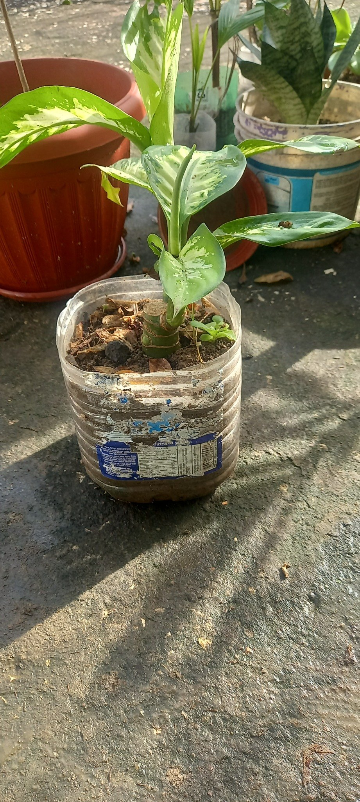
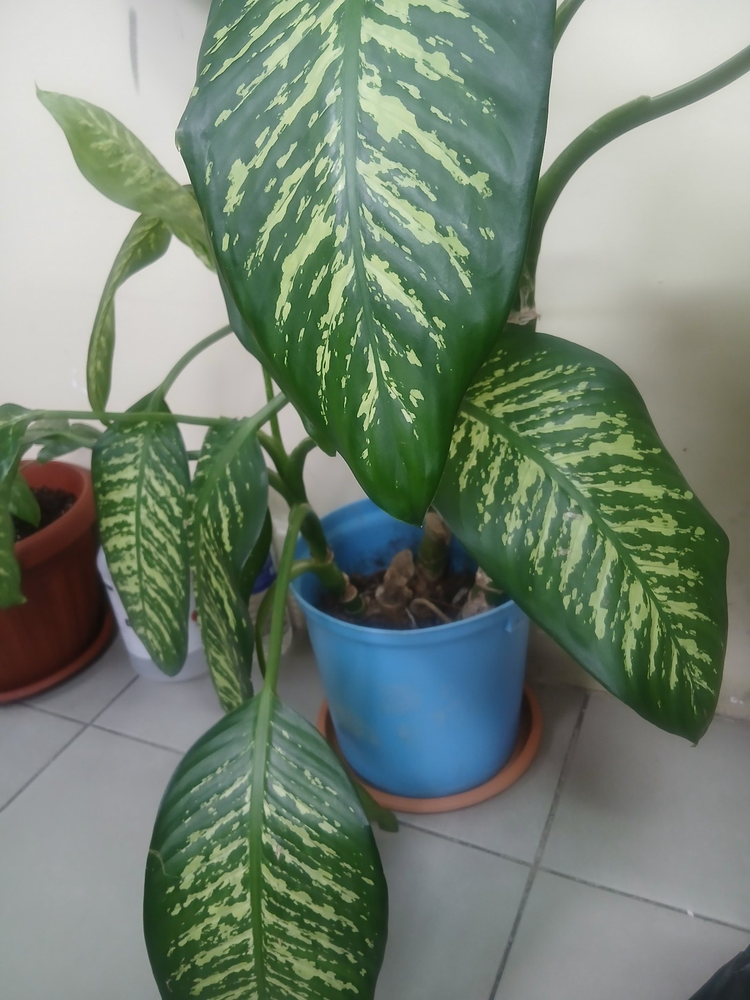
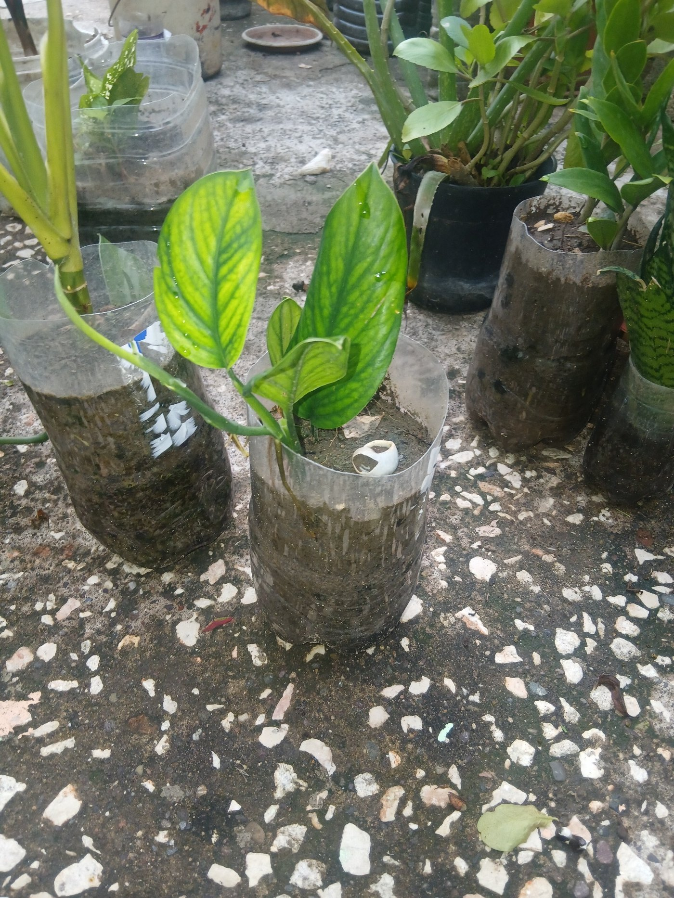
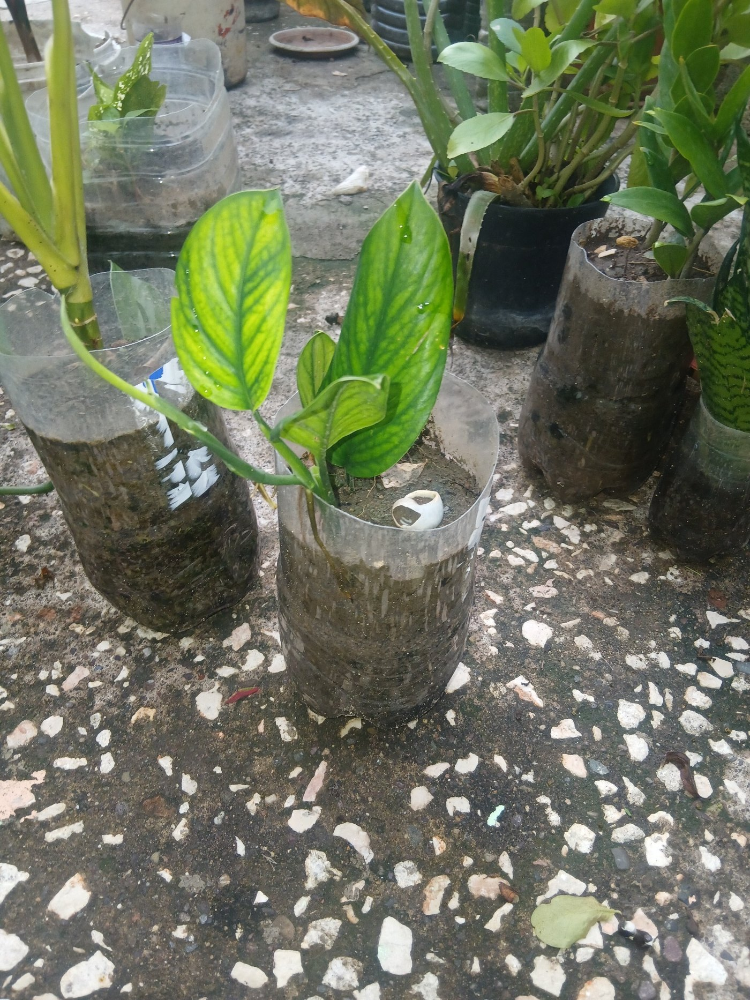

üåø Aloe Vera: The Healing Plant Every Home Should Have
Posted October 2025

Aloe Vera is one of the most useful and low-maintenance plants you can grow at home. It’s not just a pretty succulent—it’s a natural first aid kit, a beauty treatment, and an important part of traditional Jamaican remedies.
Benefits of Aloe Vera
Skin Care
Soothes burns, sunburns, cuts, and insect bites while moisturizing without making the skin oily.
Hair & Scalp Health
Nourishes the scalp and strengthens hair; helps with dandruff and irritation. Great as a DIY conditioner with natural oils.
Digestion Support
When prepared carefully from the clear inner gel, Aloe Vera can soothe the stomach and support gut health. Avoid the yellow latex under the skin.
Traditional Uses in Jamaica
Known as “Sinkle Bible,” it’s used for gentle cleanses, cold tonics with honey and lime, hair treatments with castor or coconut oil, and skin healing.
üåø The Life Plant and Its Healing Power
Posted October 2025

The Life Plant (Kalanchoe pinnata), also called Wonder of the World, is a beloved medicinal plant across the Caribbean. With thick, water-storing leaves and easy growth, it’s a perfect home remedy plant and a great choice for beginners.
Benefits & Uses
Traditionally used for coughs and colds (steeped as a tea), to soothe skin irritations when the fresh leaf is applied, and for general wellness tonics when prepared properly.
How to Grow & Care
Give bright light, water when the soil dries out, and use a well-draining potting mix. It propagates easily from leaf edges, so one plant can become many.
üå± Planting in Containers
Posted October 2025

Many people think that you need fancy pots to start planting, but that’s not true at all. At home, I’ve planted flowers, fever grass, aloe vera, and other plants in all kinds of containers — water bottles, buckets, tins, and even old paint pans. My fever grass, for example, is growing nicely in a 5-gallon oil bottle. They all work just as well as store-bought pots.
The truth is, plants don’t care what the container looks like. As long as it has soil, water, and sunlight, they’ll grow. So before you throw away that empty bottle or bucket, take a second look — it might be the perfect new home for your next plant.
Here Are a Few Examples from My Garden




Why It Matters
Reusing containers helps reduce plastic waste, saves space, and keeps your garden affordable. It’s a small step that makes a big difference — both for the environment and your pocket.


 
